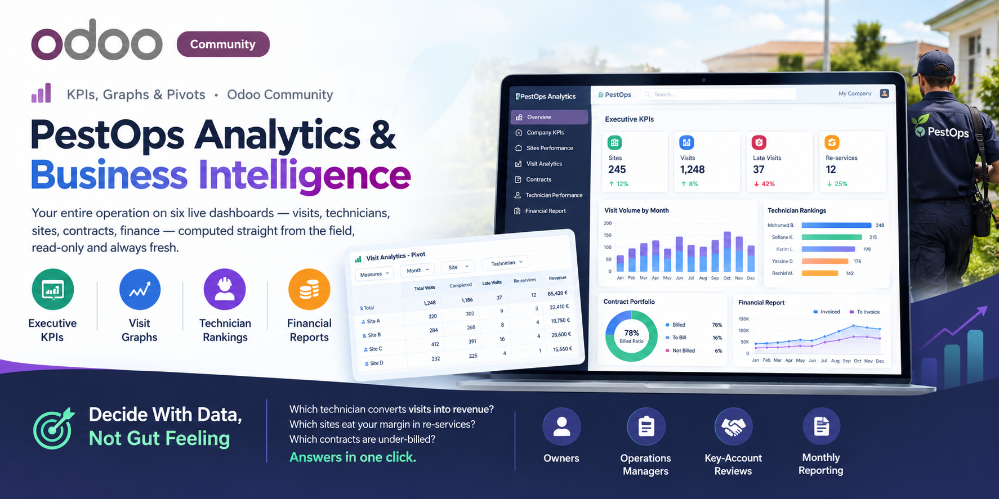
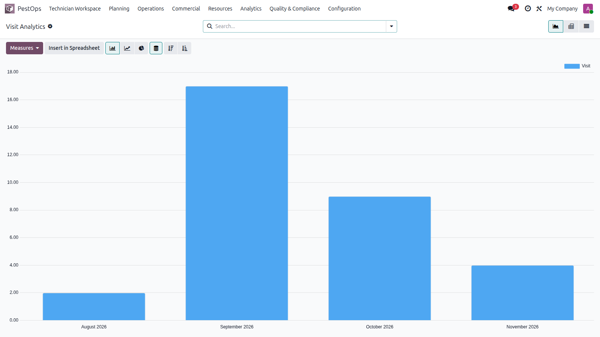
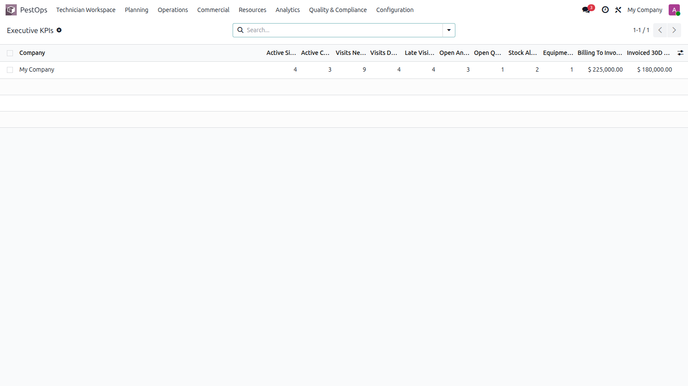
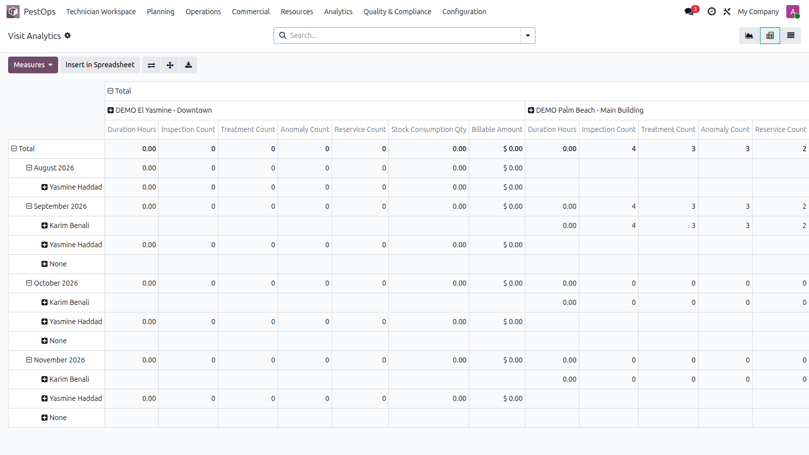

📊 KPIs, Graphs & Pivots · Odoo Community
🏢 Executive KPIs 📈 Visit Graphs 🧑🔧 Technician Rankings 💰 Financial Reports


Visit volume by month, straight from live operations.
Which technician converts visits into revenue? Which sites eat your margin in re-services? Which contracts are under-billed? Answers in one click.
👔 Owners 📋 Operations Managers 💼 Key-Account Reviews 📑 Monthly Reporting
High-performance SQL views aggregate the whole suite: executive company KPIs (sites, visits, late visits, anomalies, re-services, billing), site performance, visit analytics, contract portfolio with billed ratios, technician performance and a full financial report from billing items.

Executive KPIs per company.
Every view ships with native Odoo graph, pivot and list presentations: visits by month, billing by month, technician rankings, site comparisons — slice by state, period, site or technician, then export for management packs.

Pivot exploration of visit analytics.
| Odoo Version | Community |
|---|---|
| License | LGPL-3 |
| Module Type | Reporting (requires PestOps modules) |
| Dependencies | pestops_core, pestops_account, pestops_stock, pestops_quality, pestops_equipment |
| External Services | None required |
📧 imazighenapps@gmail.com — fast response 🔄 Free Updates